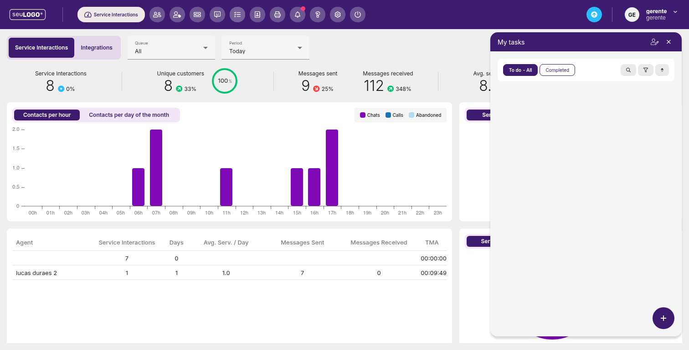

Tarefas (My tasks)
Crie e acompanhe suas tarefas pendentes e concluídas sem sair do painel de trabalho.

1. Onde aparece
O painel de tarefas (My tasks) aparece como um painel lateral sobreposto em várias telas da plataforma (inclusive sobre o dashboard de KPIs). Assim, você acompanha pendências enquanto opera o restante do sistema.
2. Abas
- To do - All — tarefas pendentes (todas).
- Completed — tarefas já concluídas.
3. Ferramentas do painel
- Ícones de busca, filtro e ordenação no topo do painel.
- Botão flutuante + (roxo) no canto inferior para adicionar uma nova tarefa.
Dica: mantenha o painel “My tasks” aberto para visualizar compromissos enquanto atende — ele não interfere nas outras telas.